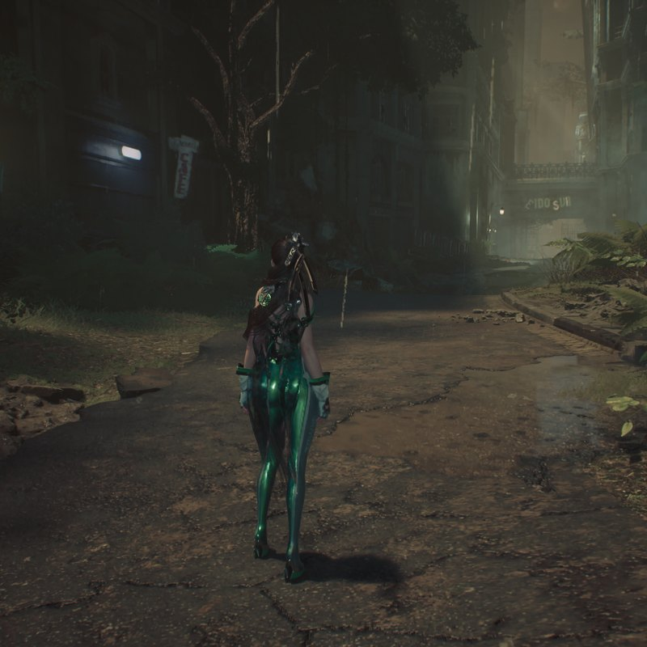
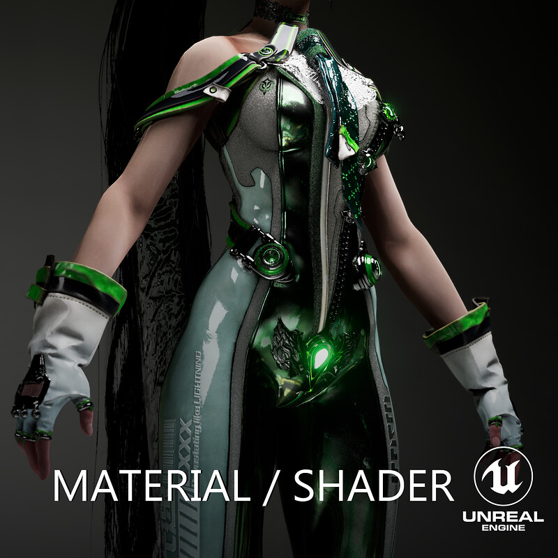
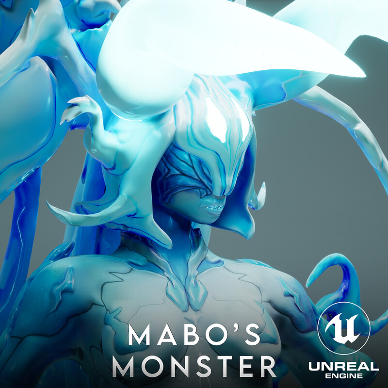
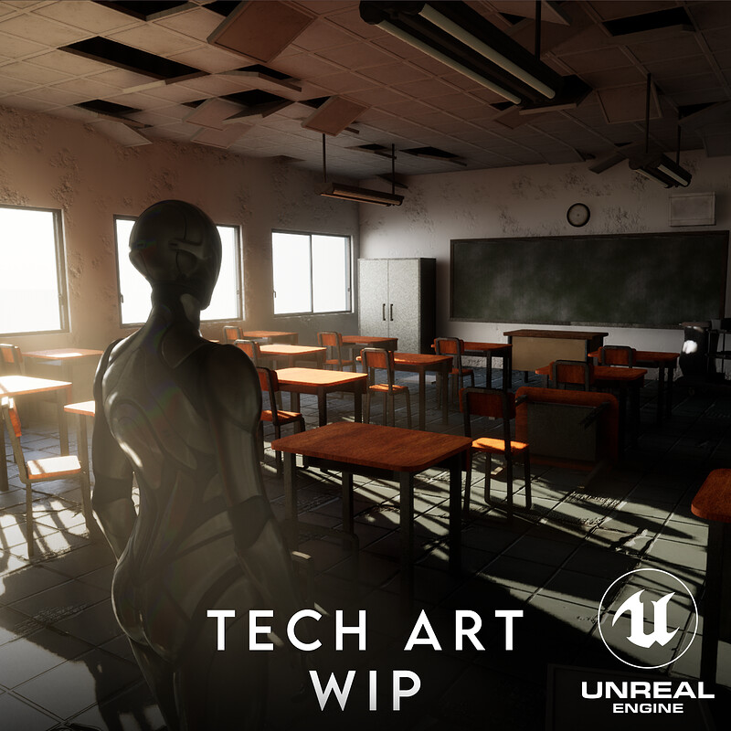
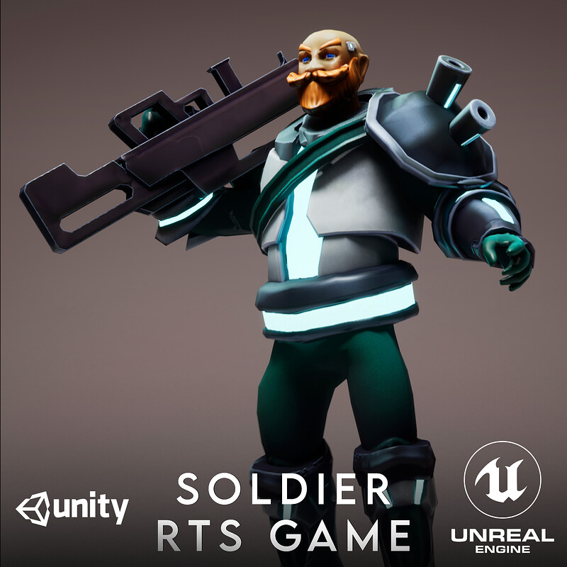
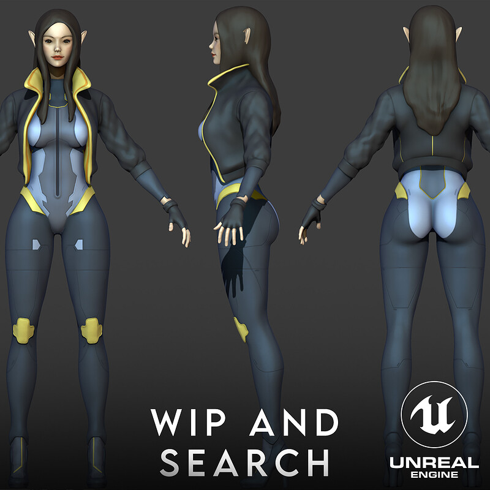

I build game systems and the worlds that hold them: from a full ARPG endgame grown inside a AAA title to environments that tell their story prop by prop.

View projectThe Eidos 7 area of Stellar Blade rebuilt in Unreal Engine 5.8 from the game's own data: level, Eve, combat and the opening cinematic, each piece checked against the original.

View projectAn ongoing study rebuilding Eve's materials and shaders in Unreal Engine by pure interpretation, working from the game's textures with very little public information to lean on.

View projectA creature taken from a 2D concept (by mabo9317) to a full Unreal Engine render, with a step-by-step breakdown of the whole process.

View projectA long-running abandoned school environment used as a training ground: new techniques get tested, kept and improved here. The post-apo corridor piece above grows out of this sandbox.

View projectStudent project made in two months with a team of 12: the human unit and robots, taken from modeling all the way to functional in-game integration.

View projectResearch and iteration snapshots: a character sculpt, procedural dungeon generation and Gameplay Ability System experiments.
I'm Steven, a technical artist who learns games by building inside them. My current playground is Stellar Blade, where I've been crafting an entire ARPG endgame as a mod, and a custom UE 5.8 world grown out of that work. I care about systems that prove themselves with numbers and environments that tell stories, and I build my own tools (procedural generators, agentic pipelines) to get there faster.